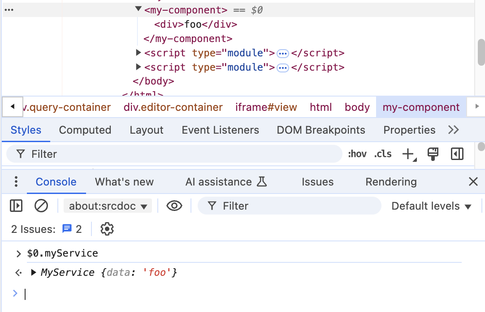

Published {% prettyDate date %}, {% readTime page %}
I've mentioned before that one of the first difficulties you encounter as you adopt web components is communicating between components.. If only we could reach out and share instances between web components, especially when web components might be loading dynamically and at different times.
Hear me out: Services are a fantastic way to communicate and share functionality and state between web components.
In this post, I'll talk about:
And I'll also share a project I've been working on!
A service is some object that contains functionality and sometimes contains some state. This service is a singleton, and should be available for anyone to use and subscribe to changes in state
Another important detail is that consumers of services should not have to worry about the instantiation and lifecycle of a service. If a consumer calls on a service, the service system should provide a reference by either just providing it from some store of services or instantiating one for the consumer. This means that services are often lazy and won't exist until they're needed.
If you've ever used Ember.js, they have a construct called services that are a big inspiration for what I'm proposing here. The services I'm proposing is an implementation of dependency injection that works especially well with web components or micro-framework situations.
So, my goal is to have a system that:
Okay, about context as a architecture: context is an excellent way to avoid prop drilling. If you had read the docs on react context in its first versions it was included in, you would also have noticed a lot of warnings about context. Context was meant to avoid prop drilling, but it makes it hard for component re-use. Reading it now, it's kind of funny how much the docs try to talk you out of using context.
In Lit, we run into some of the same restrictions outlined in those warnings from React. Context can only be consumed by descendents of the provider of the context in the DOM tree. Also, components need to set up specific context events and code to receive specific contexts from its ancestors. Above all this, the provider instantiates the context whether there are consumers or not.
I guess I'm trying to say context is great for certain small scopes in an application, but it was not meant to be a general way that "services" would be instantiated and shared generally.
Components really should use provider patterns if tight coupling is expected. For example, a list and list items and functionality with a list makes a perfect situation where communication is heiarchical and coupled by design. So there are lots of places you wouldn't reach for a service.
But that's just the thing- what if you need general APIs available globally? What if you don't want components coupled tightly to where they are in the DOM? What if you have components entering and leaving the DOM that need to work with these APIs? Events and sending references with events is awkward and not ideal.
One thing we tried early at my place of employment was using an event bus to send/receive messages. This seems to work well for things, but there were a few problems. First, if a component wasn't in the DOM yet, we had to set up an event that notified all involved that the component was indeed now in the DOM. Then, when the component finally announced it's arrival, components could send it information. But second, events are annoying to set up, tear down, and manage.
It went something like this
data from you,
here's a callback, can you send it through this callback?
dataThis. Was. Aweful. And not only was it painful to set up and tear down event listerners like this (even when we abstracted that process out to nice methods), we had trouble debugging, testing, and keeping track of all who were subscribing and who needed to be subscribing for state changes.
Window?
I'm growing increasingly less convinced we need to worry about window
pollution or keeping things private.
In my post on stores, I just slapped my store references in the globalThis and
retrieved them in other modules. This works... fine, but there's no system or
convention or expectation to organize code this way, and it's completely run
time.
I'll just say, this is no way to run a ship! Let's make things formal...
For my implementation, I actually stick pretty close to the
web components context protocol. The idea is there's one thing running that listens to
get-service events called the service provider. And this provides
services to all who dispatch that event.
The difference between context providers and this service-provider is that this service-provider instantiates services if they don't exist, and keeps a record of which services exist already. It also listens to and dispatches events off of the window. This allows components to register services event if they are not yet connected to the DOM.Lastly, this service provider doesn't have to be a web component. It can be a class you run in a script, as long as it's run first thing.
{% include "./example1.html" %}This is a very simple service- all it does it provide a string "foo." But There's a couple nice things about this minimal example.
If you have multiple components reaching out for this service, only one
service is created and returned. The provider handles all this, and you' don't
have to worry about order or when the new consumers are brought into the app.
(The only exception being that the service provider needs to be instantiated
first.) Here's an example where you can add more
my-component components, and they retrieve the service just fine.
If you're using a web component, you can easily inspect the service, because the service reference is attached as a property on that web component. If you need to debug a service, it's easy to see and inspect. In a framework, it's not too difficult either, you would just need to debug that component through whatever component dev tools are availabe.
And speaking of frameworks, this would be super easy to do in any framework. You can easily just use events to reach out to service references, and the framework doesn't have to know how you got them.
Of course, you would need to deal with reactivity. This is something we touched on a bit in the last post about stores. I have a lot to say about this, but reactivity in this service system is a bit complicated. (Maybe my next post?)
Here's an example using petite-vue, a really cool project which lets you sprinkle in vue-like components throughout a page. One thing you'll notice in this example is that vue reactivity catches changes in the service, and when the service changes its properties the view renders the new value. Pretty nice perk to using petite-vue!
{% include "./example2.html" %}And, just to beat the proverbial dead horse, is an example with a service being used in React:
{% include "./example3.html" %}
I didn't try to hook up this service with reactivity to React, but if you're
interested, you could find a way to make a hook that uses
useSyncExternalStore
to make React react to changes
from external sources. (Also probably a topic for a whole blog post 😅)
So I made a thing:
wc-services. This
package provides a service-provider component, a
service fetching function, and some niceties to make using
services easier to work with and reactive!
The only additional part of this package that isn't covered here is that services need to extend a base class. This is required only so services can track consumers and notify consumers when state changes. So a service might look like this:
And a Lit component might look like this:
To see this in action on stackblitz, check out this example:
Again, I would love to hear what you think and any suggestions you might have. {% socials %}